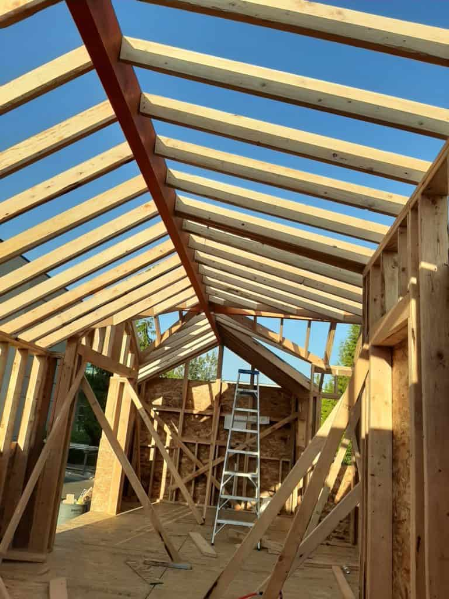

August 12, 2023

The tiny house movement has taken the world by storm, appealing to individuals seeking a simpler, more sustainable, and financially mindful lifestyle. Embracing the allure of cozy and compact living spaces, many are eager to explore the costs involved in building or buying a tiny home. In this comprehensive guide, we will delve into the factors influencing the expenses of tiny homes, the cost of DIY vs. professional builds, financing options, hidden expenses to consider, and real-world case studies to shed light on the total investment required.
How much does it cost to build a tiny house? An average DIY tiny home project will likely range from $20,000 to $50,000, depending on factors such as location, materials, and complexity. However, if you are not a confident builder, then the cost can go up significantly for mistakes or you may be left with other problems, like water leaks or safety concerns.
How much does it cost to buy a tiny house? The cost of buying a tiny house can range from $40,000 to over $150,000, depending on various factors. However, the quality of the company often determines the price and also quality of the tiny house.
To comprehend the overall cost of a tiny home, it's essential to consider the various expense categories involved:
1. Materials and Construction: The primary building materials, such as lumber, insulation, roofing, and siding, contribute significantly to the total cost.
2. Labor and Professional Services: Labor costs, if hiring a professional builder or contractor, can vary depending on their expertise and location.
3. Permits and Legal Fees: Obtaining necessary permits and complying with building codes might incur additional costs.
4. Appliances and Fixtures: Outfitting the tiny home with appliances, plumbing fixtures, and electrical systems adds to the expenses.
The total cost of a tiny home can fluctuate based on the extent of customization and design choices:
1. DIY vs. Professional Builds: Opting for a do-it-yourself approach can save money on labor but requires additional time and effort. This is a realistic option for people who have construction experience.
2. Unique Features and Amenities: Customizing the tiny home with unique features or high-end amenities will influence the final cost.
3. Energy-Efficient Upgrades: Investing in energy-efficient systems, like solar panels or composting toilets, may incur higher initial costs but lead to long-term savings.
Building a tiny home yourself can be a cost-effective option. On average, a DIY tiny home project ranges from $20,000 to $50,000, depending on factors such as location, materials, and complexity. Of course the price can always go up for more extravagant features.
The internet has taken a fancy to talking about building a tiny home for $10,000 or under. However, this is a very unrealistic number. Most used materials are not suitable for constructing a house, much less a house you plan on being mobile. They are often not strong enough or emit toxic chemicals, both of which cause safety concerns.
Unless you are gifted lots of materials, plan on your tiny house build costing way over $10,000.
Several factors influence the total cost of building a tiny home:
1. Size and Square Footage: Larger tiny homes will require more materials and consequently increase the cost.
2. Choice of Materials and Finishes: High-quality and sustainable materials often come at a premium.
3. Experience and Skills of the Builder: DIY builders with construction expertise can save on labor costs.
For example, when we built our first tiny home we went overboard and spent extra money in materials to fasten the house to the trailer, to be safe. With more experience now, we know how much is actually required.
4. Location and Local Building Regulations: Costs may vary based on regional construction and zoning regulations.
5. Incorporating Off-Grid Capabilities: Off-grid features, like solar panels or composting toilets, will raise initial expenses but often save in the long run.
Pros:
- Cost savings through DIY construction
- Full customization and creative control
- Pride in the accomplishment of building one's own home
Cons:
- Time and effort-intensive
- Requires construction knowledge and skills
- May face challenges obtaining permits and complying with regulations
- May have safety or longevity concerns if not constructed properly
For those not keen on DIY construction, buying a pre-built or custom-built tiny home is an option. The cost can range from $40,000 to over $150,000, depending on various factors.
Several factors can impact the cost of purchasing a tiny home:
1. Builder Reputation and Experience: Established builders with a strong track record may charge higher prices but often produce better quality homes that last longer. Be cautious of companies with very low prices; they often provide a house that is not up to standard or was not what was discussed. I have seen people buy from cheap companies and get houses that did not come with AC as discussed, did not give them the title to the trailer, wired the house incorrectly and it almost burnt down.
2. Customization and Add-On Options: Additional features and customizations will increase the overall cost.
3. Inclusion of Appliances and Furnishings: Pre-built tiny homes that come fully furnished and equipped will be more expensive.
4. Location and Delivery Fees: Shipping a tiny home to a distant location may incur additional expenses.
Pros:
- Convenient and time-saving
- Access to professional craftsmanship
- Option to choose from existing designs or customize to personal preferences
Cons:
- Higher upfront costs compared to DIY
- Limited creative control over design and features
- Quality may vary based on builder reputation
For those with sufficient savings, self-funding the tiny home project can provide financial independence and avoid interest payments.
Applying for personal loans or traditional mortgages can provide funding for building or buying a tiny home.
As some tiny homes are classified as recreational vehicles (RVs), RV loans may be available for financing tiny home projects.
Creative financing options, such as crowdfunding campaigns or grants, may be viable for certain individuals.
The cost of purchasing or leasing land and securing a legal parking spot for a tiny home can be significant.
Connecting to water, sewer, and electricity services may entail expenses depending on the location and setup.
Tiny homes, like any dwelling, require periodic maintenance, repairs, and budgeting for ongoing expenses.
Securing insurance coverage and meeting local legal requirements add to the long-term costs of tiny home ownership.
In the pursuit of a more intentional and sustainable lifestyle, the cost of building or buying a tiny home plays a significant role. Whether opting for a DIY project to achieve cost savings and full creative control or choosing a pre-built model for convenience and craftsmanship, it's essential to consider the factors influencing the expenses. From financing options to hidden costs and real-world examples, careful planning and research will empower aspiring tiny homeowners to make informed decisions about their tiny living dreams. By understanding the total investment required, individuals can confidently embark on a journey towards a more fulfilling and affordable tiny home lifestyle.